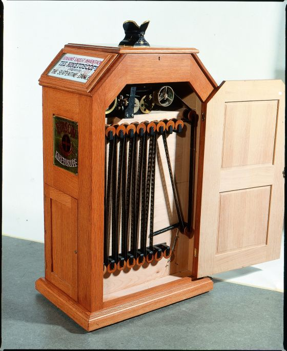
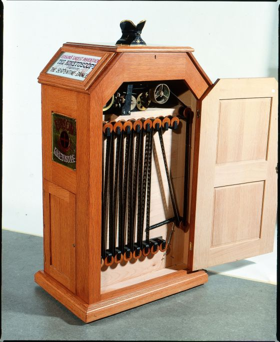

Historia del Cine
La historia del cine es un relato fascinante que se remonta a finales del siglo XIX, cuando pioneros como los hermanos Lumière y Thomas Edison presentaron las primeras imágenes en movimiento. Desde entonces, el cine ha evolucionado de simples películas en blanco y negro a obras maestras en technicolor y más allá. Ha sido testigo de épocas de guerra y paz, de revoluciones culturales y avances tecnológicos. A través de la pantalla plateada, el cine ha capturado la imaginación de millones, contando historias que han inspirado, educado y entretenido generaciones enteras, dejando una marca indeleble en la historia de la humanidad.
Los Hermanos Lumière
De izquierda a derecha: Auguste y Louis Lumière, el cinematógrafo. En 1895, presentaron su invento. Esta máquina podía grabar imágenes en movimiento, y también proyectarlas ante una audiencia. Con su primera proyección pública en París, los hermanos Lumière marcaron el inicio de la era del cine moderno.
 

Thomas Edison
Su trabajo en la tecnología eléctrica y óptica sentó las bases para la cinematografía moderna. Uno de los inventos más significativos fue el kinetoscopio. Este dispositivo permitía la visualización individual de películas cortas mediante una ranura en la que se insertaba una película de rollo continuo.